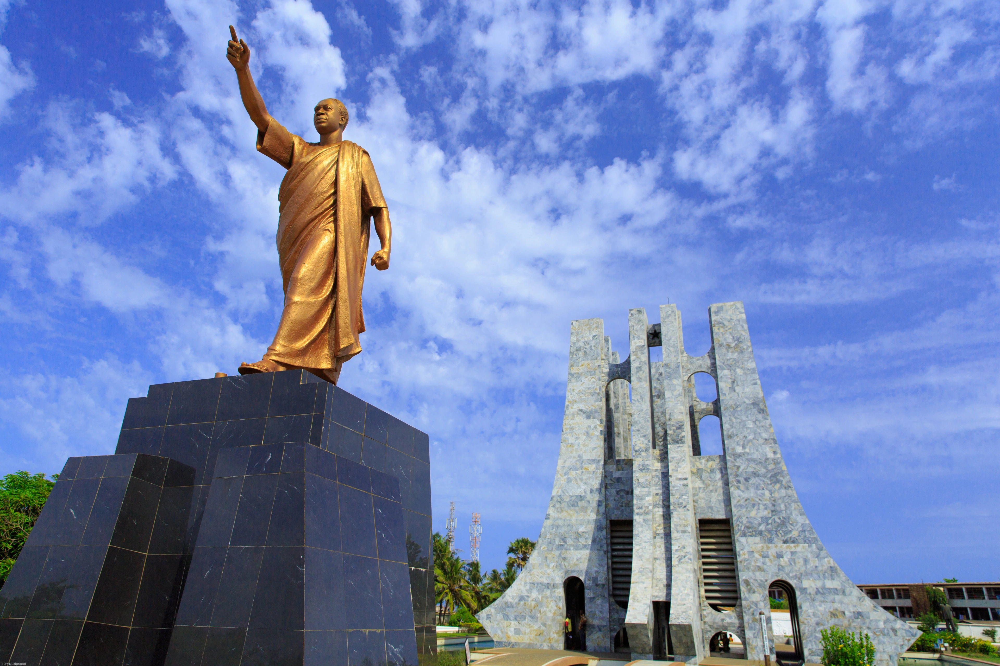
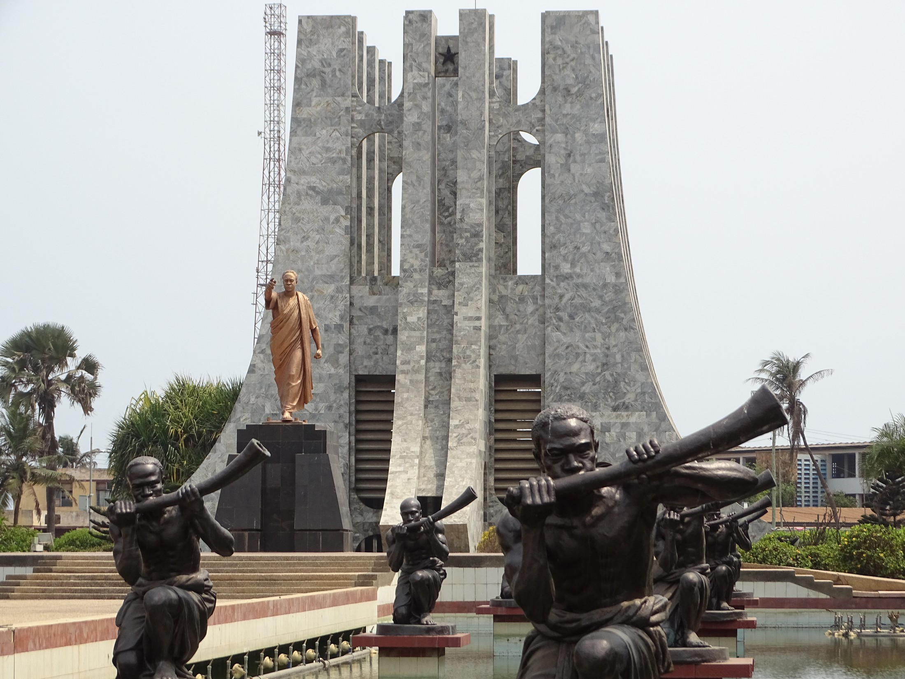
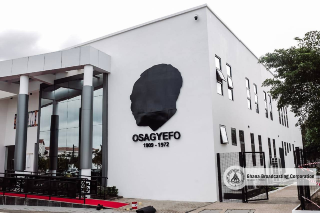
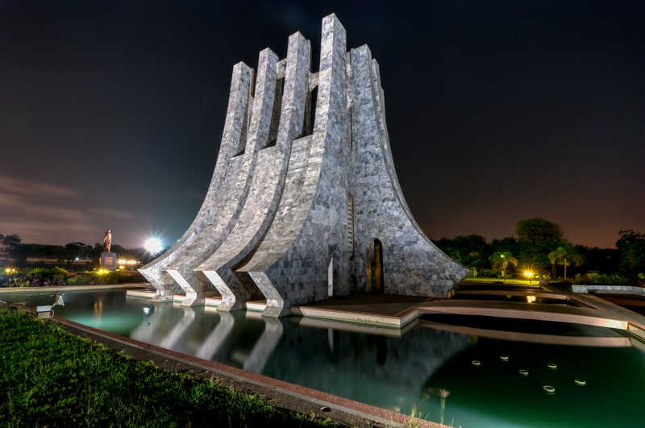

Kwame Nkrumah Memorial Park & Mausoleum
A serene park and final resting place of Ghana's first president.
Kwame Nkrumah Memorial Park & Mausoleum
The Kwame Nkrumah Memorial Park & Mausoleum, located in Accra, Ghana, is dedicated to the memory of Dr. Kwame Nkrumah, a pivotal figure in Ghana's independence and a champion of Pan-Africanism. The park spans five acres and houses a museum, the mausoleum where Nkrumah is interred, and various symbolic structures.
The mausoleum, characterized by its distinctive design resembling an overturned sword, signifies peace. It contains the remains of Nkrumah and his wife, Fathia Nkrumah. The park provides a tranquil environment for reflection and learning about Ghana's history.
Things to See and Do
- Visit the Mausoleum: Pay respects to Kwame Nkrumah and his wife at their final resting place, appreciating the architectural symbolism of the structure.
- Explore the Museum: Delve into Nkrumah's life, his pivotal role in Ghana's fight for independence, his vision of a united Africa, and his lasting legacy through artifacts, photos, and documents.
- Stroll through the Park: Enjoy the beautifully landscaped gardens, the symbolic statues, and the overall peaceful ambiance conducive to contemplation.
- Admire the Water Features: Observe the carefully designed fountains and pools, each representing different aspects of the African continent and Nkrumah's vision.
- View the Bronze Statues: See the statues depicting Nkrumah's accomplishments and contributions to Ghana and Africa.


